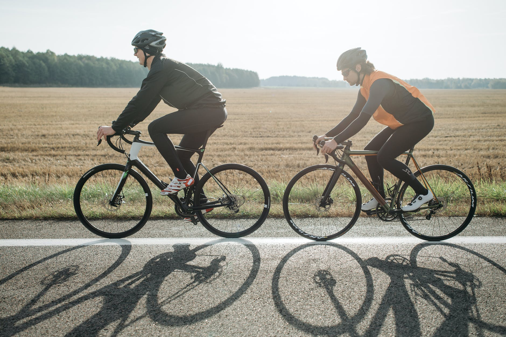
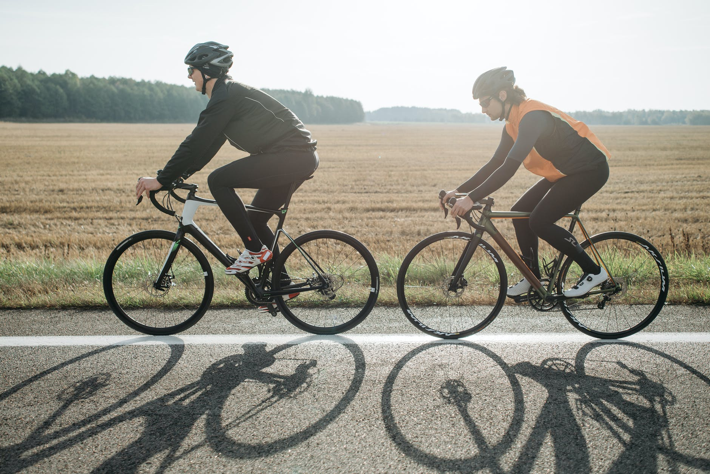

Injury Prevention Tips

- Do not add mileage too quickly.
Especially if you have run higher mileage in the past, it may be tempting to run the same amount of distance. However, if you go out too hard and too fast, you put yourself at risk of getting an injury.
- Ice for 15 minutes after every long run.
For shorter runs, you do not need to ice.
- Stretch before AND after your runs!
Most people skip out on this, but if you do not stretch before running, you are essentially running on tight muscles which can put you at high risk for injury. Stretching after runs is also important because it lowers the heart rate and helps eliminate the build up of lactic acid in muscles.
- Cross train in addition to running.
Especially if it is strength training. I like to weight lift or cycle.
- Change your shoes every 400-500 miles run.
Running is a high impact sport, especially at longer distances. For best fit, be sure to visit a running store to get properly sized.
 

Images courtesy of Pexels.com